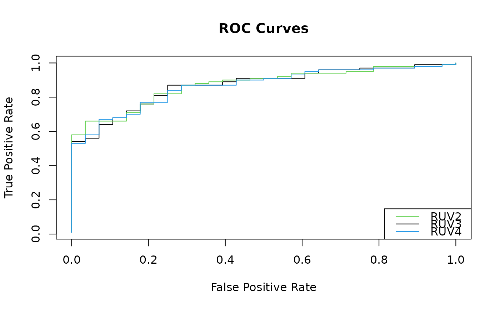

RUV2 (RUV2) and RUV4 (cate or RUV4)
are actually classes of methods indexed by the factor analysis used. RUV3 is the intersection of
RUV2 and RUV4. That is, it is the class of methods that can be considered both RUV2 and RUV4.
ruv3(Y, X, ctl, k = NULL, cov_of_interest = ncol(X), include_intercept = TRUE, limmashrink = TRUE, gls = TRUE, fa_func = pca_naive, fa_args = list())
| Y | A matrix of numerics. These are the response variables where each column has its own variance. In a gene expression study, the rows are the individuals and the columns are the genes. |
|---|---|
| X | A matrix of numerics. The covariates of interest. |
| ctl | A vector of logicals of length |
| k | A non-negative integer.The number of unobserved confounders. If not specified and the R package sva is installed, then this function will estimate the number of hidden confounders using the methods of Buja and Eyuboglu (1992). |
| cov_of_interest | A vector of positive integers. The column numbers of the covariates in X whose coefficients you are interested in. The rest are considered nuisance parameters and are regressed out by OLS. |
| include_intercept | A logical. If |
| limmashrink | A logical. Should we apply hierarchical
shrinkage to the variances ( |
| gls | A logical. Should we use generalized least squares
( |
| fa_func | A factor analysis function. The function must have
as inputs a numeric matrix |
| fa_args | A list. Additional arguments you want to pass to fa_func. |
betahat The estimates of the coefficients of
interest. The values corresponding to control genes are 0.
sebetahat_unadjusted The unadjusted standard errors of
betahat. The values corresponding to control genes are
NA.
tstats_unadjusted The t-statistics corresponding to the
coefficients of interest. These use sebetahat_unadjusted
as the standard errors. The values corresponding to control
genes are NA.
pvalues_unadjusted The p-values using said statistics
above.
sebetahat_adjusted The unadjusted standard errors of
betahat. This equals sebetahat_unadjusted *
multiplier. The values corresponding to control genes are
NA.
tstats_adjusted The t-statistics corresponding to the
coefficients of interest. These use sebetahat_adjusted
as the standard errors. The values corresponding to control
genes are NA.
pvalues_unadjusted The p-values using said statistics
above.
betahat_ols The ordinary least squares (OLS) estimates
for all of the coefficients.
sebetahat_ols The standard errors from OLS regression.
tstats_ols The t-statistics from OLS regression.
pvalues_ols The p-values from OLS regression.
sigma2_unadjusted The unadjusted variance estimates.
sigma2_adjusted The adjusted variance estimates. This is
equal to sigma2_unadjusted * multiplier.
Zhat The estimates of the confounders.
alphahat The estimates of the coefficients of the confounders.
multiplier The estimate of the variance inflation parameter.
mult_matrix The unscaled covariance of betahat
after including the confounders.
mult_matrix_ols The OLS version of mult_matrix.
degrees_freedom The degrees of freedom used when
calculating the p-values.
debuglist A list of elements that aren't really useful
except for unit testing and debugging.
resid_mat Y21 - Z2
The model is $$Y = XB + ZA + E,$$ where \(Y\) is a matrix of responses (e.g. log-transformed gene expression levels), \(X\) is a matrix of covariates, \(B\) is a matrix of coefficients, \(Z\) is a matrix of unobserved confounders, \(A\) is a matrix of unobserved coefficients of the unobserved confounders, and \(E\) is the noise matrix where the elements are independent Gaussian and each column shares a common variance. The rows of \(Y\) are the observations (e.g. individuals) and the columns of \(Y\) are the response variables (e.g. genes).
For instructions and examples on how to specify your own factor analysis, run the following code in R:
utils::vignette("customFA", package = "vicar"). If it doesn't work, then you probably haven't built
the vignettes. To do so, see https://github.com/dcgerard/vicar#vignettes.
Gerard, David, and Matthew Stephens. 2019. "Unifying and Generalizing Methods for Removing Unwanted Variation Based on Negative Controls." Statistica Sinica, in press. <doi:10.5705/ss.202018.0345>.
vruv4, cate, RUV4 are
all different versions of RUV4.
RUV2 is a version of RUV2.
ruvimpute is a generalization of RUV2 and RUV4.
library(vicar) ## Generate data and controls --------------------------------------------- set.seed(127) n <- 13 p <- 201 k <- 2 q <- 3 is_null <- rep(FALSE, length = p) is_null[1:101] <- TRUE ctl <- rep(FALSE, length = p) ctl[1:73] <- TRUE X <- matrix(stats::rnorm(n * q), nrow = n) B <- matrix(stats::rnorm(q * p), nrow = q) B[2, is_null] <- 0 Z <- X %*% matrix(stats::rnorm(q * k), nrow = q) + matrix(rnorm(n * k), nrow = n) A <- matrix(stats::rnorm(k * p), nrow = k) E <- matrix(stats::rnorm(n * p, sd = 1 / 2), nrow = n) Y <- X %*% B + Z %*% A + E ## Fit RUV3, CATE (RUV4), and RUV2 ---------------------------------------- ## The parameters chosen in CATE are to make the comparisons as close as possible. ruv3out <- ruv3(Y = Y, X = X, k = k, cov_of_interest = 2, include_intercept = FALSE, ctl = ctl, limmashrink = FALSE) ruv2out <- ruv::RUV2(Y = Y, X = X[, 2, drop = FALSE], Z = X[, -2, drop = FALSE], ctl = ctl, k = k) ruv4out <- cate::cate.fit(Y = Y, X.primary = X[, 2, drop = FALSE], X.nuis = X[, -2, drop = FALSE], r = k, fa.method = "pc", adj.method = "nc", nc = ctl, calibrate = FALSE, nc.var.correction = FALSE) ruv3p <- ruv3out$pvalues_unadjusted ruv2p <- ruv2out$p ruv4p <- ruv4out$beta.p.value ## Control genes are known to be 0! --------------------------------------- ruv2p[ctl] <- NA ruv4p[ctl] <- NA ## Plot ROC curves are very similar in this dataset------------------------ order_ruv3 <- order(ruv3p, na.last = NA) order_ruv2 <- order(ruv2p, na.last = NA) order_ruv4 <- order(ruv4p, na.last = NA) nnull <- sum(is_null[!ctl]) nsig <- sum(!is_null[!ctl]) fpr3 <- cumsum(is_null[order_ruv3]) / nnull tpr3 <- cumsum(!is_null[order_ruv3]) / nsig fpr2 <- cumsum(is_null[order_ruv2]) / nnull tpr2 <- cumsum(!is_null[order_ruv2]) / nsig fpr4 <- cumsum(is_null[order_ruv4]) / nnull tpr4 <- cumsum(!is_null[order_ruv4]) / nsig graphics::plot(fpr3, tpr3, type = "l", xlab = "False Positive Rate", ylab = "True Positive Rate", main = "ROC Curves")